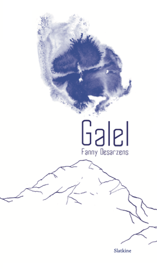

Disponible en librairie !
Galel
Paul, Jonas et Galel aiment la montagne. L’hiver, chacun mène sa vie en plaine ; l’été, Jonas et Galel exercent comme guides. Ils se retrouvent une fois par an à la Baïta, le refuge tenu par Paul. Un endroit de passage où ils vivent des moments aussi attendus que précieux. Où leur amitié est née.
Dans un monde de rocaille et de silence, Galel déploie le talent brut de son auteure, étoile montante de la littérature romande.
Acheter maintenant sur www.slatkine.com